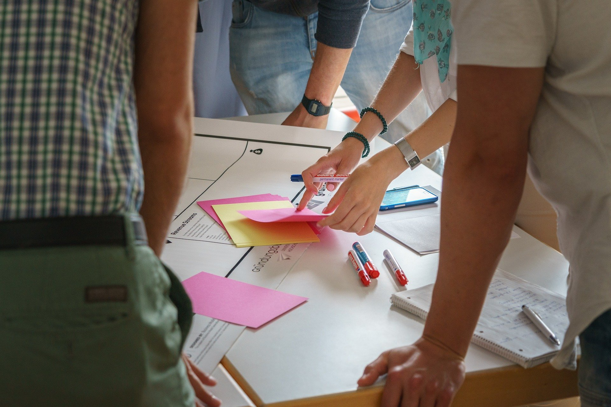

Bibliotheken und Kulturinstitutionen stehen vor komplexen Aufgaben: veränderte Nutzerbedürfnisse, neue Lernformate, veränderte Rollen und steigende Erwartungen an Räume, Angebote und Zusammenarbeit.
In partizipativen Workshops und Design-Thinking-Prozessen begleite ich Teams dabei, diese Herausforderungen zu strukturieren, Perspektiven sichtbar zu machen und gemeinsam tragfähige Konzepte zu entwickeln.
Worum geht es in diesen Prozessen?
Nicht um Schulung im klassischen Sinn, sondern um gemeinsames Denken, Klären und Gestalten.
Typische Fragestellungen sind: - Wie verändern sich Nutzerbedürfnisse – und was bedeutet das konkret? - Welche Rolle soll die Bibliothek / Einrichtung künftig einnehmen? - Wie lassen sich Lern- und Begegnungsräume sinnvoll weiterentwickeln? - Wie können Mitarbeitende und Stakeholder sinnvoll beteiligt werden?
Wie ich arbeite
Ich arbeite dialogisch, strukturiert und partizipativ.
Design Thinking nutze ich dabei nicht als Methode „von der Stange“, sondern als Arbeitsweise, um: - komplexe Themen zu ordnen - Nutzer- und Stakeholderperspektiven sichtbar zu machen - Optionen und Entscheidungsräume zu öffnen - Ideen in konkrete nächste Schritte zu übersetzen
Visualisierung, gemeinsame Reflexion und iterative Entwicklung spielen dabei eine zentrale Rolle.
Formate
Partizipative Workshops & Co-Creation
- Ein- oder mehrtägige Workshops
- mit Mitarbeitenden, Nutzer:innen und Stakeholdern
- zur Klärung von Bedarfen, Zielen und Entwicklungslinien
Design-Thinking-Prozesse
- strukturierte, mehrstufige Prozesse
- von der Bedarfsklärung über Ideenentwicklung bis zur Konzeptskizze
- angepasst an den Kontext von Bibliotheken und Kulturinstitutionen
Prototypen & Lernraumkonzepte
- Entwicklung von Raum- und Nutzungskonzepten
- schnelle Prototypen und Tests
- iterative Weiterentwicklung auf Basis realer Nutzungserfahrungen
Was dadurch entsteht
- Klarheit über Nutzerbedürfnisse und Anforderungen
- tragfähige, gemeinsam entwickelte Konzepte
- höhere Akzeptanz durch Beteiligung
- konkrete Handlungsfelder und nächste Schritte
- Lern- und Begegnungsräume mit klarer Funktion und Haltung
Für wen ist dieses Angebot gedacht?
- Bibliotheken
- Kultur- und Bildungseinrichtungen
- Teams, die Räume, Angebote oder Prozesse weiterentwickeln möchten
- Organisationen, die Beteiligung ernst nehmen, aber Orientierung brauchen
Nächster Schritt
Wenn Sie prüfen möchten, ob dieses Vorgehen für Ihre Fragestellung passt, schreiben Sie mir gern 2–3 Sätze zu Ihrem Kontext.
Ich melde mich mit Rückfragen und einem Vorschlag für das passende Format.